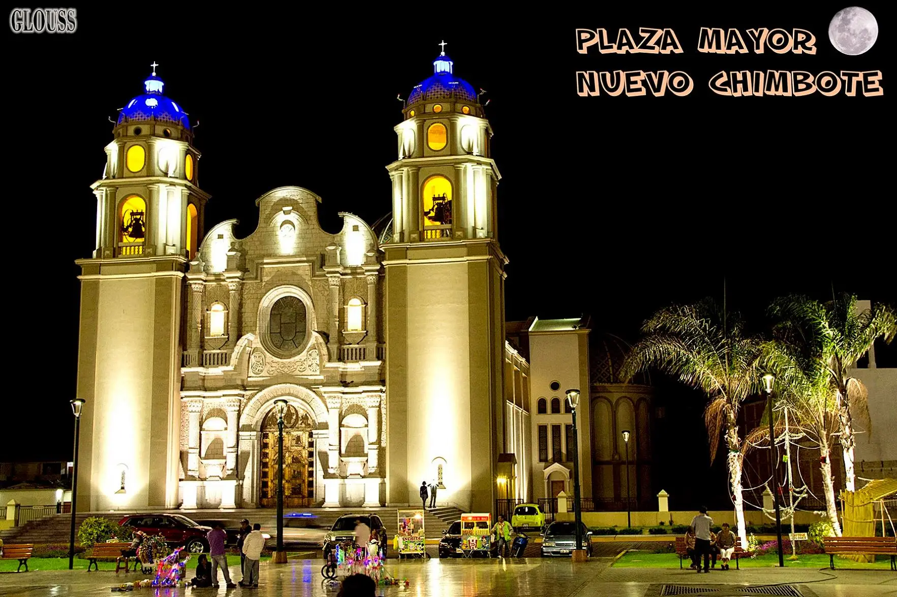
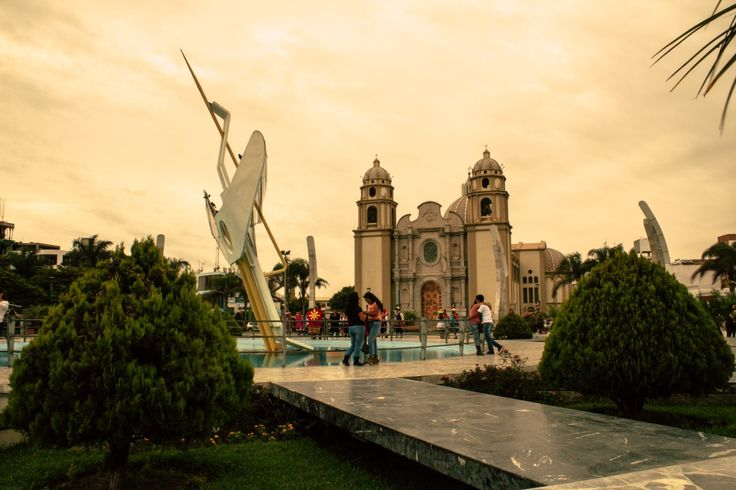
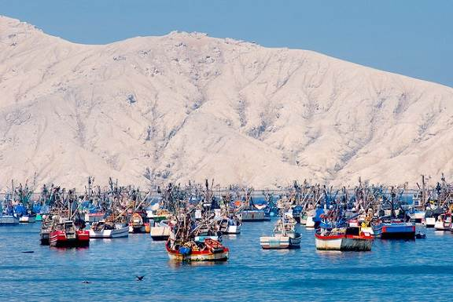
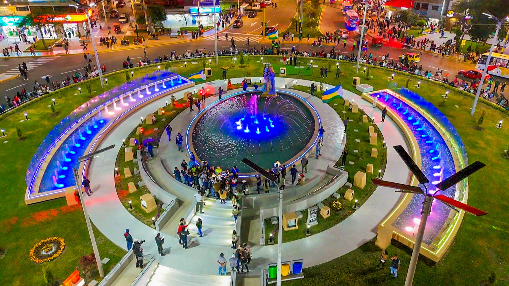

|

Al visitar Nuevo Chimbote, puedes conocer la Plaza Mayor, un espacio representativo donde las familias se reúnen y se realizan diversas actividades. También destacan sus iglesias, parques, restaurantes, mercados y establecimientos comerciales, que forman parte de la vida cotidiana de sus habitantes. Además, cuenta con instituciones educativas y universidades que contribuyen a la formación de niños y jóvenes, así como centros de salud y otros servicios necesarios para la comunidad.
Otro de los atractivos de la zona son sus playas, entre ellas la playa El Dorado, que ofrece paisajes naturales y espacios para disfrutar del mar. Estos lugares permiten realizar paseos familiares, tomar fotografías y apreciar la belleza del litoral de Áncash. Asimismo, la gastronomía local es un aspecto importante, ya que se pueden encontrar platos preparados con pescados y mariscos, además de otras comidas tradicionales de la región.
Nuevo Chimbote también destaca por su actividad comercial y por el esfuerzo de sus habitantes, quienes contribuyen diariamente al progreso del distrito. Sus negocios, restaurantes, mercados y diferentes emprendimientos generan oportunidades de trabajo y favorecen la economía local. A pesar de los desafíos relacionados con el crecimiento urbano y el cuidado del medioambiente, la ciudad continúa desarrollándose y busca ofrecer mejores condiciones para sus ciudadanos.
Conocer Nuevo Chimbote es descubrir una ciudad llena de historia, naturaleza, oportunidades y esperanza. Es un lugar que refleja el esfuerzo de su gente y el deseo de seguir progresando. Por eso, es importante valorar sus atractivos, cuidar sus espacios públicos y proteger sus playas para que las futuras generaciones también puedan disfrutar de su belleza y riqueza cultural.
|
Una ciudad llena de oportunidades

Una de las principales oportunidades que ofrece Nuevo Chimbote es la educación. En la ciudad existen colegios, institutos de educación superior y universidades que permiten a los jóvenes prepararse profesionalmente y desarrollar sus habilidades. La educación cumple un papel fundamental en el progreso de la población, porque brinda conocimientos y herramientas para acceder a mejores empleos, crear negocios y contribuir al desarrollo de la sociedad. Gracias a estas oportunidades, muchos jóvenes pueden estudiar carreras relacionadas con la tecnología, la salud, la administración, la educación y otras áreas profesionales.
Otro aspecto importante es el crecimiento del comercio y de las actividades económicas. En Nuevo Chimbote existen mercados, tiendas, restaurantes, centros comerciales y pequeños negocios que ofrecen productos y servicios a los habitantes. Estas actividades generan puestos de trabajo y permiten que numerosas familias obtengan ingresos para cubrir sus necesidades. Asimismo, los emprendedores tienen la posibilidad de desarrollar sus propias ideas, ofrecer nuevos productos y contribuir al movimiento económico de la ciudad.
La ubicación de Nuevo Chimbote también favorece las actividades relacionadas con la pesca, la gastronomía y el turismo. Su cercanía al litoral permite disfrutar de playas y paisajes naturales que pueden atraer visitantes interesados en conocer la costa de Áncash. Lugares como la playa El Dorado destacan por su atractivo natural y por las posibilidades de realizar actividades recreativas. Además, la gastronomía local, especialmente los platos preparados con pescados y mariscos, representa una oportunidad para los restaurantes y los negocios dedicados a la alimentación.
Más información
|
Un lugar para vivir y crecer

Vivir en Nuevo Chimbote significa formar parte de una comunidad que continúa desarrollándose y que se esfuerza por mejorar sus condiciones de vida. Muchas familias han elegido esta ciudad para construir sus hogares, criar a sus hijos y desarrollar sus proyectos personales. Con el paso del tiempo, diferentes sectores urbanos han crecido mediante la construcción de viviendas, avenidas, parques, mercados y establecimientos comerciales, lo que ha permitido ampliar los espacios destinados a la vida familiar y las actividades cotidianas.
Uno de los aspectos más importantes de Nuevo Chimbote es la educación. La ciudad cuenta con instituciones educativas de distintos niveles, entre ellas colegios, institutos y universidades, que ofrecen oportunidades de aprendizaje y formación profesional. Estos centros educativos ayudan a los niños y jóvenes a adquirir conocimientos, desarrollar sus capacidades y prepararse para enfrentar los desafíos del futuro. La educación también contribuye al desarrollo de la comunidad, porque permite formar profesionales capaces de aportar nuevas ideas y soluciones a los problemas de la sociedad.
Otro elemento fundamental es el trabajo. En Nuevo Chimbote existen diversas actividades económicas relacionadas con el comercio, los servicios, la gastronomía, la construcción y las actividades vinculadas con la pesca y la industria de la región. Estas actividades ofrecen oportunidades laborales y permiten que muchas personas desarrollen sus habilidades y obtengan ingresos para mantener a sus familias. Asimismo, los pequeños negocios y emprendimientos forman parte de la economía local, ya que ofrecen productos y servicios que responden a las necesidades de los habitantes.
Más información
|
Te invitamos

Si estás buscando un lugar donde puedas relajarte, disfrutar de la naturaleza y conocer nuevas experiencias, Nuevo Chimbote te espera con diferentes alternativas para pasar un día agradable. Sus playas son uno de sus principales atractivos, ya que permiten contemplar el mar, caminar por la orilla, disfrutar de la brisa marina y apreciar los paisajes del litoral. Entre los lugares que puedes visitar se encuentra la playa El Dorado, conocida por su entorno costero y por ser un espacio que atrae a personas interesadas en disfrutar del mar y pasar tiempo al aire libre.
Además de sus playas, Nuevo Chimbote cuenta con espacios urbanos que permiten conocer la vida cotidiana de sus habitantes. Sus plazas, parques, avenidas y zonas comerciales son lugares donde las familias se reúnen, los jóvenes comparten con sus amigos y los visitantes pueden recorrer la ciudad tranquilamente. Durante tu visita, puedes observar el crecimiento de sus urbanizaciones, conocer sus principales espacios públicos y descubrir cómo sus habitantes contribuyen diariamente al desarrollo de la comunidad.
Uno de los motivos para visitar Nuevo Chimbote es su deliciosa gastronomía. La cocina de esta zona de la costa peruana destaca por el uso de pescados y mariscos, ingredientes que forman parte de numerosos platos tradicionales. Entre las preparaciones más conocidas se encuentran el ceviche, la jalea de pescado y la causa de pescado. Estos platos ofrecen una experiencia culinaria que permite disfrutar de los sabores característicos del litoral peruano. También puedes visitar restaurantes y establecimientos locales para conocer diferentes preparaciones y compartir una agradable comida en familia.
Más información
|